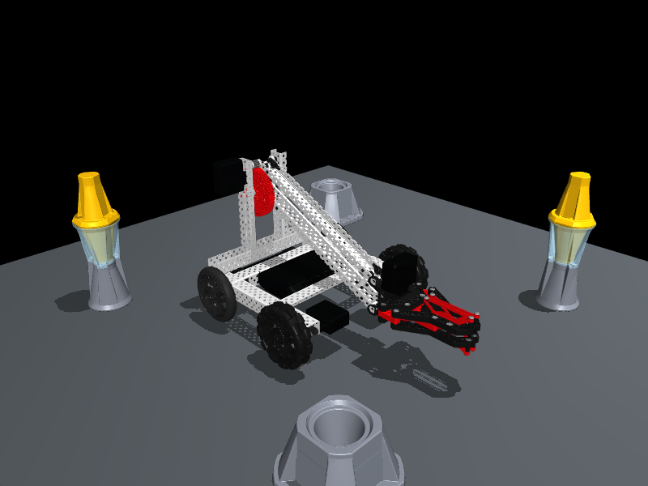

All robot visual parts come from the supplied Clawbot CAD. These are wheel-configuration variants with the SAME scoring mechanism, not four novel mechanisms. No simulation tests were run.
Source placement is retained except declared wheel swaps. CAD has no verified mates or complete shaft/fastener inventory; these are not certified buildable. Physics masses, wheel friction and locked-arm contacts remain approximate. No robot visual geometry was fabricated from primitive concept sketches.
01 · Baseline Traction / Traction Representation
Retains the complete source Clawbot chassis, motor locations, battery, lift transmission, arm, and claw while representing both driven and passive wheel positions with the existing 4-inch traction-wheel CAD. As an untested hypothesis, uniform traction wheels may depict greater lateral scrub during turning than configurations using passive omnis; no performance, buildability, or legality is claimed. This is only a conservative source-CAD variant intended for later lower-detail display geometry and separate physics modeling, not a complete parts-search result.
Unverified: Axle lengths and actual shaft engagement are unknown because no verified mating constraints or shaft BOM are available.; Required spacer quantities, thicknesses, and ordering are unknown.; Ground clearance has not been verified after substituting or retaining the catalog wheel representations.; The source assembly may omit or incompletely represent collars, bearings, fasteners, hubs, washers, or other installation hardware.; Catalog mass properties are not calibrated, so this CAD variant cannot support validated weight, balance, or physics claims.; Physical buildability and competition legality are not established.
Keeps the entire original chassis, motor locations, battery, lift transmission, arm, and claw, using the existing 4-inch traction-wheel CAD at driven positions and the existing 276-2185 omni-wheel CAD at passive positions. As an untested hypothesis, passive omnis could represent reduced lateral resistance in turns while traction wheels preserve the source-style driven contact; no improvement is asserted. This modest variant is a starting point for source-CAD-to-display simplification plus separate physics, not a verified mechanism or complete parts-search system.
Unverified: Axle lengths and actual shaft engagement are unknown because no verified mating constraints or shaft BOM are available.; Required spacers and offsets for alignment of traction and 276-2185 omni wheels are unknown.; Ground clearance and effective wheel-height compatibility have not been verified.; The source assembly hardware may be incomplete, including collars, bearings, fasteners, hubs, washers, or retainers.; Catalog mass properties are uncalibrated; mass distribution and dynamic behavior must remain separate assumptions.; Physical buildability and competition legality are not established.
Preserves the original chassis, motor placement, battery, lift transmission, arm, and claw while placing the existing 276-2185 omni-wheel CAD at driven locations and the existing 4-inch traction-wheel CAD at passive locations. As an untested hypothesis, driven omnis may depict different lateral behavior, while passive traction wheels may still introduce scrub or constrain turning; no benefit is claimed. The configuration is solely a conservative real-part representation for lower-detail display and independently defined physics.

Original CAD detailReduced display detail; same physics parameters
Unverified: Axle length and torque-transmitting engagement at the driven omni wheels are unknown because mating constraints and the shaft BOM are unverified.; Spacer dimensions, wheel offsets, and collar placement are unknown.; Ground clearance and interference throughout the drivetrain have not been checked.; Source assembly hardware completeness is unknown, including bearings, collars, hubs, fasteners, washers, and retainers.; No calibrated mass properties are available for validated center-of-mass or simulation conclusions.; Physical buildability and competition legality are not established.
Leaves the full source chassis, motor locations, battery, lift transmission, arm, and claw unchanged and represents all driven and passive wheel positions with the existing 276-2185 omni-wheel CAD. As an untested hypothesis, this arrangement may depict lower lateral resistance than all-traction representation, but it could also change directional restraint and handling assumptions; neither improvement nor suitability is claimed. It is a modest source-CAD representation variant for simplified display plus separate physics, not a novel mechanism or complete parts-search system.
Unverified: Axle lengths and engagement at both driven and passive omni-wheel positions are unknown due to absent verified mating constraints and shaft BOM.; Spacer stacks, offsets, collars, and retention details are unknown.; Ground clearance and possible chassis or hardware interference have not been verified.; The source assembly may lack complete fastening, bearing, hub, washer, collar, or retaining hardware representation.; Catalog mass properties are not calibrated and must not be treated as validated simulation inputs.; Physical buildability and competition legality are not established.